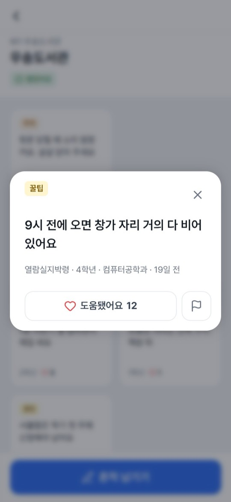
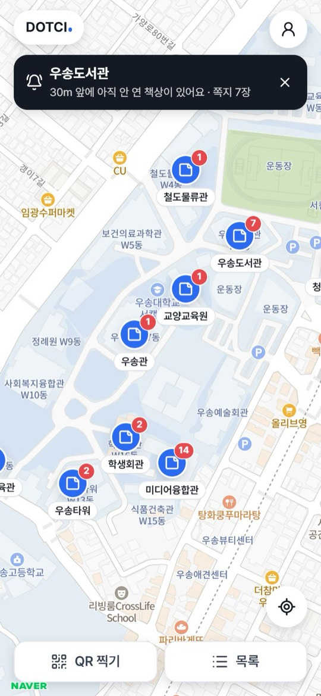
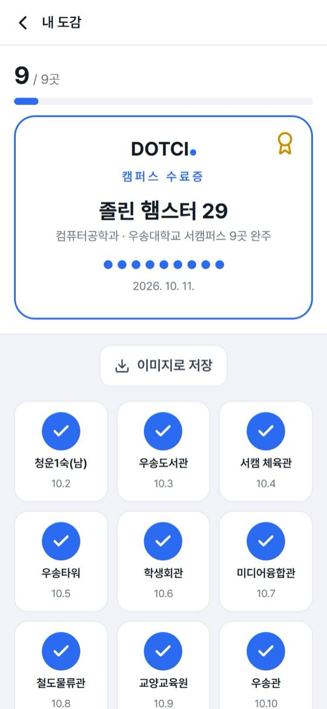
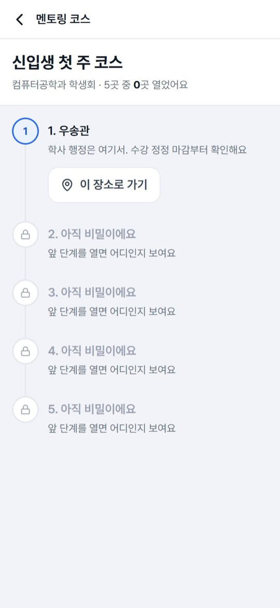
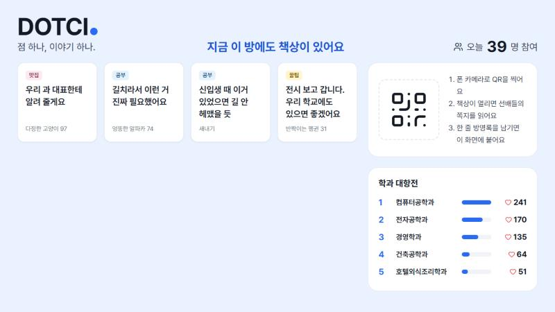
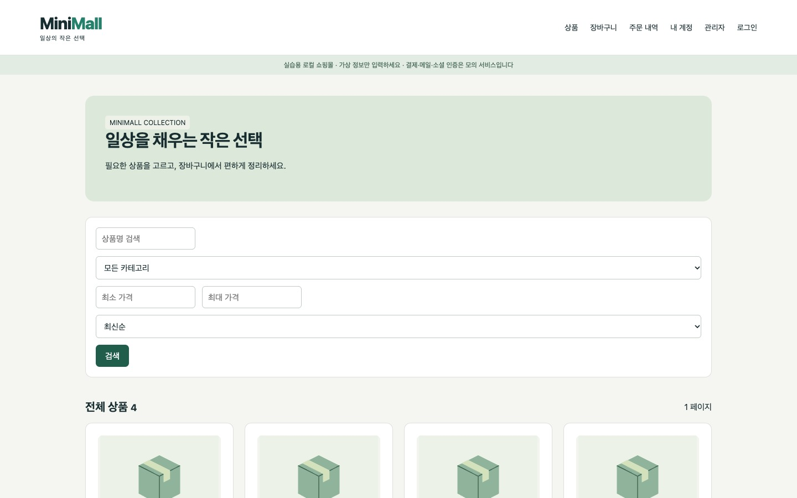

- 무엇
- 장소가 곧 검색어인 위치 기반 웹
- 언제
- 2026 2학기
- 내 몫
- UI 디자인 · 사용자 평가 · 발표 (3인 팀)
- 결과물
- 공개 웹 서비스. 캠퍼스 21곳, GPS · QR로 도착 확인
- 상태
- 11월 교내 학술제 출품 · 서비스 공개 중
만든 것
- 21
- 곳 우송대 서캠퍼스의 장소
- 2
- 가지 도착 확인 GPS · QR
- 200
- 자 쪽지 한 장의 길이
- 3
- 인 팀 개발 · 디자인 · QA







근거
누구나 열어 볼 수 있는 주소만 놓았습니다.
DOTCI2026 2학기 · 서비스 공개 중
함께
3인 팀으로 만들었습니다. 제 몫은 UI 디자인 · 사용자 평가 · 발표입니다. 화면 속 쪽지는 예시 글입니다.
다음 작품
MiniMall
요구 명세와 시험으로 끝을 재는 수업용 가상 쇼핑몰
